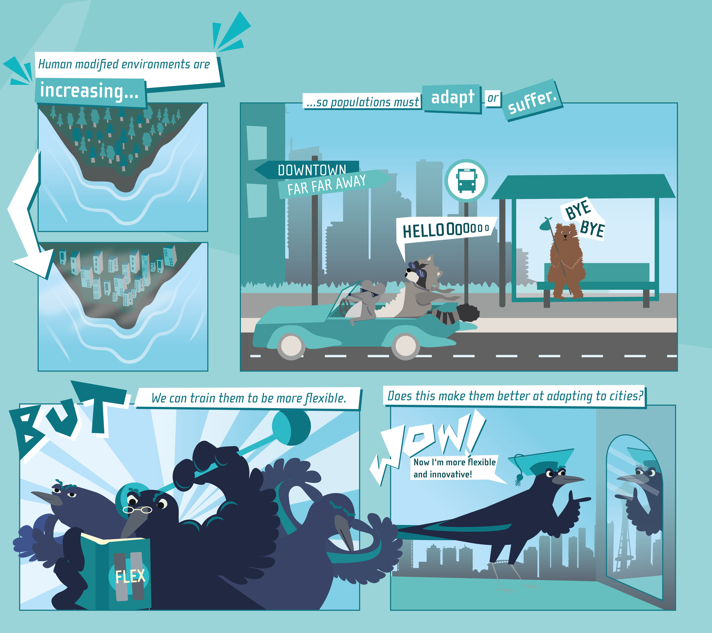
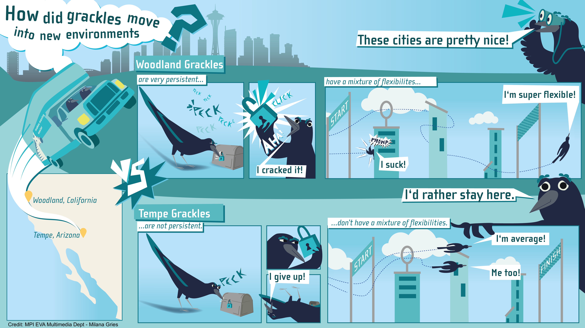

Corina Logan (she/her)
Group Leader
Department of Human Behavior, Ecology and Culture
Max Planck Institute for Evolutionary Anthropology
Research Associate, University of California, Santa Barbara
Gates Cambridge Scholar
corina_logan [at] eva.mpg.de
Human modified environments are rapidly increasing and populations must either adjust to or suffer from these habitat changes. In my lab, we investigate how populations use behavior to adapt to environmental change. In particular, we focus on behavioral flexibility, the ability to adjust behavior to new circumstances, because it is thought to play an important role in acclimating to changing environments.
Does behavioral flexibility help individuals succeed in human modified environments?
The ManyIndividuals reproducible research program

We can manipulate grackle flexibility through serial reversal learning, which makes these individuals more flexible and more innovative in new contexts, and better at foraging [press releases 1, 2]. I co-founded a global network of researchers with field sites to investigate whether we can manipulate flexibility in endangered and successful species and, if so, whether this helps them survive in human modified environments. Check out ManyIndividuals to learn about our open, verifiable, and replicable workflow that makes our research better and faster.
How are behaviorally flexible great-tailed grackles rapidly expanding their range?

Great-tailed grackles, a flexible bird species, have rapidly expanded their range into North America over the past 140 years. How were they able to do this so quickly? Grackles increased their habitat breadth between 1979 and 2019 by moving into more urban, arid environments. This could indicate that they are using behavior to adapt to new environments. We tested this and found that grackles in a recently established population on the edge of their range (Woodland, California) are more persistent, have a higher variance in flexibility, and disperse longer distances from where they hatched compared with grackles in an older population away from the northern edge (Tempe, Arizona) [press releases 1, 2].
Boat-tailed grackles are the great-tailed grackles' closest relative and not rapidly expanding their range. Does that mean they are less flexible? We found that boat-tailed grackles are as flexible as great-tailed grackles, but perhaps less persistent. Overall, we are finding that, when the city comes to you, be flexible; when you go to the city, be persistent. [press release]
Land Acknowledgement and Action Plan The land on which I conduct this research was stolen from the Chumash Nations by colonizers. As part of my ongoing work to acknowledge the history of this land and my relation to it as a settler, I'm currently supporting The SPACE and local artists (e.g., Indigenous DNA: Decolonize Native Art). You can, too, by donating and sharing this information with your networks!
Mia Lopez of the Coastal Band of the Chumash Nation created Land Acknowledgements for the University of California Santa Barbara’s Department of English and the Carsey-Wolf Center. I have incorporated sections of Lopez’ text (in quotation marks and with Lopez' permission) in this Land Acknowledgement.
“The Chumash people are comprised of the descendants of Indigenous peoples removed from their Island of origin: Limuw (Santa Cruz), Anyapac (Anacapa), Wima (Santa Rosa) and Tuqan (San Miguel), and subjugated by five missions during Spanish colonization of the Central Coast, from Malibu to Morro Bay and inland to Bakersfield. Know that each Tribe, Council, Clan and Band is working hard to restore and continue their traditional stewardship practices on these lands and heal from this historical trauma. The damage has been done and continues to be done by not sharing the true history and legacy of this place and others. And the exploitation of the area’s natural and cultural resources can never be erased. There is no mitigation effort or research project that can make Chumash communities whole again, but we can do better.” I am considering how I “might more fully account for” the role my research and presence has “in perpetuating colonial ways of knowing and seeing, and how, moreover, [I] might dismantle these same structures and tendencies.”
I’m committed to supporting Indigenous people and Nations in the places I conduct my research and beyond. To do this, I gathered information from Chumash websites about what Chumash people value (for example, taking care of the land; getting their land back; and preserving, promoting, and celebrating their culture). It is an honor to work in this place and, to take responsibility for my presence here, I share many ways I plan to take action on an ongoing basis:
Starting in 2024, I will make an annual donation to The SPACE, which is a Chumash-run organization working to share their culture through education and art with all people
I will continue to volunteer for environmental restoration projects at the Santa Barbara Botanic Garden and, hopefully, also the Dos Pueblos Ranch (if it ended up being acquired by Chumash and if they are ready for volunteers when I am in the area)
When wearing Indigenous art, I will make sure to reconnect with the story of each piece so that I remember its significance and can share this knowledge with others
When voting, I will do more to determine a political candidate’s position on things that are important to Native nations, including researching “What issues are important to the Native nations near you? Does your candidate have a platform on Indigenous issues? Can you identify any news articles mentioning that person’s interaction with Native nations? If you can’t find that information, ask them! And, for lawmakers already in office, check their voting record. How does their voting record align with Native nations’ priorities?” (Native Governance Center)
Through The SPACE, I will share my research with Chumash people via a field site visit to meet the grackles and I will give a talk on what I am learning about this species
If I host an event or give a talk in the Šmuwič (Santa Barbara) area, I will do an Acknowledgment of People and Country and/or discuss my land acknowledgement and action plan, including with field site visitors
I will continue to learn and revise this action plan accordingly (at least once per year). I will share this action plan with my family, friends, colleagues, and online networks and encourage others to create their own.